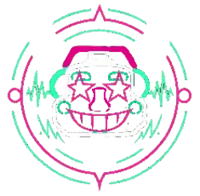

Joshua Lane's Art Nook
Home
Unfinished
Welcome to my art corner!
My purpose is to create a collaborative website for my drawings and 3D models that I have made over the past semester.
and give people a chance to pick their favorites via voting. ^^
Start by clicking the search tool to get started
Top Rated Artwork